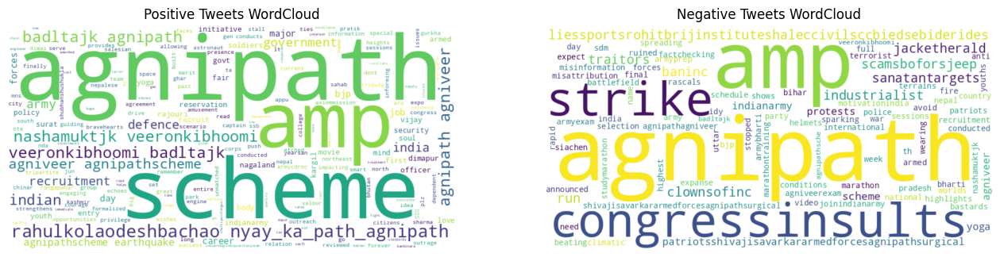

An NLP-driven case study analyzing Twitter reactions to the Agnipath government scheme.
Fetched 50+ real-time tweets using Tweepy API based on hashtags like #AgnipathScheme.
Cleaned text using Regex & NLTK to remove noise, links, mentions, and stopwords.
Applied VADER (Rule-based) and TextBlob (Lexicon-based) models to classify sentiment.
VADER identified a higher percentage of negative sentiment compared to TextBlob.
Most frequent terms appearing in the analyzed tweets.

"smart city surat engine bjp government in surat..."
"plz major sahab dont have any idea after agnipa..."
"nepal stopped recruitment since india announced..."
"congressinsults patriotsshivajisavarkararmedfor..."
"Detailed breakdown of the new recruitment policy criteria..."
Different models perceive sentiment differently. We compared TextBlob and VADER on the same dataset.
Match Rate between TextBlob and VADER
22 tweets had conflicting labels out of 50.